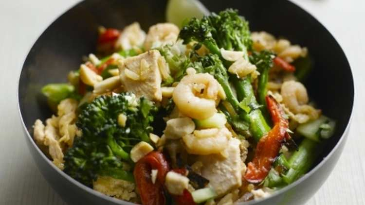

Tenderstem nasi goreng

Ingrediënten
- 2 ½ tbsp groundnut oil
- 1 onion, finely sliced
- 1 red pepper, halved and sliced
- 200g Tenderstem broccoli, halved horizontally
- 3 cloves garlic, finely chopped
- 1 or 2 red chillies, halved, deseeded and cut into slivers (depending on strength)
- 350g cooked chicken, cut into chunks
- 550g cooked rice
- 4 spring onions, cut on the diagonal
- 4 eggs, beaten
- 100g cooked, shelled prawns
- 4 tbsp dark soy sauce
- 2 tsp soft light brown sugar
- Salt and pepper
- Lime wedges to serve
- 4 inch piece of cucumber, halved, seeds removed and cut into little cubes
- Juice of 1 lime
- 2 tbsp unsalted peanuts, coarsely chopped
- 1 handful coriander, coarsely chopped
Bereiding
- Heat 1 tbsp of the groundnut oil in a large frying pan, sauté pan or wok.
- Add the onions and cook over a medium-high heat until the onions have softened (though still have bite) and are golden. Remove with a slotted spoon and set aside.
- Add another tbsp of the oil, heat and stir fry the red pepper for 2 minutes. Now add the Tenderstem broccoli and stir fry for another minute. Add the garlic, chilli and chicken and cook for another 1 ½ minutes.
- Toss in the rice and spring onions and mix everything together lightly (it is important not to press the rice or it will become stodgy) and cook till the rice is heated through, stirring occasionally.
- While you are frying the rice, quickly heat the remaining oil in a non-stick frying pan and add the egg. Cook this as if you are making an omelette, rather than scrambled eggs. Don’t stir the egg but drag the bits which are set round the side into the centre then tip the pan to allow runny egg to set around the outside – keep doing this until it is all cooked.
- With a sharp knife cut the egg into thin ribbons. Add to the rice along with the prawns, soy sauce, sugar, salt and pepper and onions. Toss and heat through.
- Squeeze lime over the top, scatter on the cucumber, peanuts and coriander and serve with lime wedges.